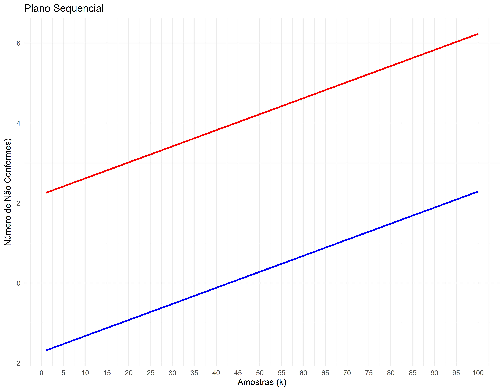

#> ── Attaching core tidyverse packages ──────────────────────── tidyverse 2.0.0 ──
#> ✔ dplyr 1.1.4 ✔ readr 2.1.5
#> ✔ forcats 1.0.0 ✔ stringr 1.5.1
#> ✔ ggplot2 3.5.2 ✔ tibble 3.2.1
#> ✔ lubridate 1.9.4 ✔ tidyr 1.3.1
#> ✔ purrr 1.0.4
#> ── Conflicts ────────────────────────────────────────── tidyverse_conflicts() ──
#> ✖ dplyr::filter() masks stats::filter()
#> ✖ dplyr::lag() masks stats::lag()
#> ℹ Use the conflicted package (<http://conflicted.r-lib.org/>) to force all conflicts to become errorsPlano Sequencial
Biblioteca
Planos Sequenciais
Neste caso não vamos mais usar o pacote AcceptanceSampling.
Vamos utilizar as equações derivadas por wald (1947) e pelo Sattostical Research Group (1945) para obter o plano sequencial.
p1 é o nível de qualidade do produtor (PQL)
p2 é o nível de qualidade do consumidor (CQL)
h1 é o coeficiente linear da reta de aceitação
h2 é o coeficiente linear da reta de rejeição
s é o coeficiente angular
n0 é o número de amostras antes da possibilidade de aceitação
n1 é o número de amostras antes da possibilidade de rejeição
np1 é o TMA em p1
ns é o TMA na proporção defeituosa igual a s
np2 é o TMA em p2
Definições
p1 <- 0.01
p2 <- 0.05
alfa <- 0.05
beta <- 0.10Plano Sequencial
Grafico do Plano Sequencial
k <- seq(1, 100, by = 1) # amostras de tamnaho 1 n=1 sequenciais
# Y1 = sk - h1 e Y2 = sk + h2
Y1 <- s * k - h1
Y2 <- s * k + h2
# Plotando o gráfico
ggplot(data = data.frame(k, Y1, Y2), aes(x = k)) +
geom_line(aes(y = Y1), color = "blue", size = 1) +
geom_line(aes(y = Y2), color = "red", size = 1) +
geom_hline(yintercept = 0, linetype = "dashed", color = "black") +
labs(title = "Plano Sequencial",
x = "Amostras (k)",
y = "Número de Não Conformes)") +
theme_minimal() +
scale_x_continuous(breaks=seq(0, 100, by=5))#> Warning: Using `size` aesthetic for lines was deprecated in ggplot2 3.4.0.
#> ℹ Please use `linewidth` instead.
Tabela de Resultados
library(gt)
results <- data.frame(
Amostras = k,
Y1 = Y1,
Y2 = Y2
)
gt::gt(results) |>
gt::tab_header(
title = "Resultados do Plano Sequencial"
) |>
gt::fmt_number(
columns = c(Amostras, Y1, Y2),
decimals = 2
) |>
gt::cols_label(
Amostras = "Amostras (k)",
Y1 = "Y1 (Aceitação)",
Y2 = "Y2 (Rejeição)"
)| Resultados do Plano Sequencial | ||
|---|---|---|
| Amostras (k) | Y1 (Aceitação) | Y2 (Rejeição) |
| 1.00 | −1.34 | 1.78 |
| 2.00 | −1.31 | 1.80 |
| 3.00 | −1.29 | 1.83 |
| 4.00 | −1.26 | 1.85 |
| 5.00 | −1.24 | 1.88 |
| 6.00 | −1.21 | 1.90 |
| 7.00 | −1.19 | 1.93 |
| 8.00 | −1.16 | 1.95 |
| 9.00 | −1.14 | 1.98 |
| 10.00 | −1.11 | 2.00 |
| 11.00 | −1.09 | 2.03 |
| 12.00 | −1.06 | 2.05 |
| 13.00 | −1.04 | 2.08 |
| 14.00 | −1.01 | 2.10 |
| 15.00 | −0.99 | 2.13 |
| 16.00 | −0.96 | 2.15 |
| 17.00 | −0.94 | 2.18 |
| 18.00 | −0.91 | 2.20 |
| 19.00 | −0.89 | 2.23 |
| 20.00 | −0.86 | 2.25 |
| 21.00 | −0.84 | 2.28 |
| 22.00 | −0.81 | 2.30 |
| 23.00 | −0.79 | 2.33 |
| 24.00 | −0.76 | 2.35 |
| 25.00 | −0.74 | 2.38 |
| 26.00 | −0.71 | 2.40 |
| 27.00 | −0.69 | 2.43 |
| 28.00 | −0.66 | 2.45 |
| 29.00 | −0.64 | 2.48 |
| 30.00 | −0.61 | 2.50 |
| 31.00 | −0.59 | 2.53 |
| 32.00 | −0.56 | 2.55 |
| 33.00 | −0.54 | 2.58 |
| 34.00 | −0.51 | 2.60 |
| 35.00 | −0.49 | 2.63 |
| 36.00 | −0.46 | 2.65 |
| 37.00 | −0.44 | 2.68 |
| 38.00 | −0.41 | 2.70 |
| 39.00 | −0.39 | 2.73 |
| 40.00 | −0.36 | 2.75 |
| 41.00 | −0.34 | 2.78 |
| 42.00 | −0.31 | 2.80 |
| 43.00 | −0.29 | 2.83 |
| 44.00 | −0.26 | 2.85 |
| 45.00 | −0.24 | 2.88 |
| 46.00 | −0.21 | 2.90 |
| 47.00 | −0.19 | 2.93 |
| 48.00 | −0.16 | 2.95 |
| 49.00 | −0.14 | 2.98 |
| 50.00 | −0.11 | 3.00 |
| 51.00 | −0.09 | 3.03 |
| 52.00 | −0.06 | 3.05 |
| 53.00 | −0.04 | 3.08 |
| 54.00 | −0.01 | 3.10 |
| 55.00 | 0.01 | 3.13 |
| 56.00 | 0.04 | 3.15 |
| 57.00 | 0.06 | 3.18 |
| 58.00 | 0.09 | 3.20 |
| 59.00 | 0.11 | 3.23 |
| 60.00 | 0.14 | 3.25 |
| 61.00 | 0.16 | 3.28 |
| 62.00 | 0.19 | 3.30 |
| 63.00 | 0.21 | 3.33 |
| 64.00 | 0.24 | 3.35 |
| 65.00 | 0.26 | 3.38 |
| 66.00 | 0.29 | 3.40 |
| 67.00 | 0.31 | 3.43 |
| 68.00 | 0.34 | 3.45 |
| 69.00 | 0.36 | 3.48 |
| 70.00 | 0.39 | 3.50 |
| 71.00 | 0.41 | 3.52 |
| 72.00 | 0.44 | 3.55 |
| 73.00 | 0.46 | 3.57 |
| 74.00 | 0.49 | 3.60 |
| 75.00 | 0.51 | 3.62 |
| 76.00 | 0.54 | 3.65 |
| 77.00 | 0.56 | 3.67 |
| 78.00 | 0.59 | 3.70 |
| 79.00 | 0.61 | 3.72 |
| 80.00 | 0.63 | 3.75 |
| 81.00 | 0.66 | 3.77 |
| 82.00 | 0.68 | 3.80 |
| 83.00 | 0.71 | 3.82 |
| 84.00 | 0.73 | 3.85 |
| 85.00 | 0.76 | 3.87 |
| 86.00 | 0.78 | 3.90 |
| 87.00 | 0.81 | 3.92 |
| 88.00 | 0.83 | 3.95 |
| 89.00 | 0.86 | 3.97 |
| 90.00 | 0.88 | 4.00 |
| 91.00 | 0.91 | 4.02 |
| 92.00 | 0.93 | 4.05 |
| 93.00 | 0.96 | 4.07 |
| 94.00 | 0.98 | 4.10 |
| 95.00 | 1.01 | 4.12 |
| 96.00 | 1.03 | 4.15 |
| 97.00 | 1.06 | 4.17 |
| 98.00 | 1.08 | 4.20 |
| 99.00 | 1.11 | 4.22 |
| 100.00 | 1.13 | 4.25 |
Equações para o Tamanho Médio de Amostra
# Tamanho médio de amostra
valor_p <- function(x) {
(1 - ((1 - p2) / (1 - p1))^x) / ((p2 / p1)^x - ((1 - p2) / (1 - p1))^x)
}
Pa <- function(x) {
(((1-beta)/alfa)^x - 1)/(((1-beta)/alfa)^x - (beta/(1-alfa))^x)
}
tma <- function(pa) {
((pa*log(beta/(1-alfa))) + (1-pa)*log((1-beta)/alfa)) / (p*log(p2/p1) + (1-p)*log((1-p2)/(1-p1)))
}
Pa_diff <- function(x) {
Pa(x) - Pa_alvo
}Tamanho Médio de Amostra para o Plano Sequencial
Prob. Aceitação 0,95
# Definindo a probabilidade alvo de aceitação
Pa_alvo <- 0.95 # Defina a probabilidade alvo de aceitação
# Usando uniroot para encontrar x tal que Pa(x) = Pa_alvo
resultado <- uniroot(Pa_diff, lower = -5, upper = 20) # ajuste os limites conforme necessário
cat("Valor de x encontrado:", resultado$root, "\n")#> Valor de x encontrado: 0.9999996cat("Verificação: Pa(x) =", Pa(resultado$root), "\n")#> Verificação: Pa(x) = 0.9499999# Valor de Fração não conforme
p <- valor_p(resultado$root)
# Tamanho médio de amostra
tma(0.95)#> [1] 80.61922Prob. Aceitação 0,10
# Definindo a probabilidade alvo de aceitação
Pa_alvo <- 0.10 # Defina a probabilidade alvo de aceitação
# Usando uniroot para encontrar x tal que Pa(x) = Pa_alvo
resultado <- uniroot(Pa_diff, lower = -5, upper = 20) # ajuste os limites conforme necessário
cat("Valor de x encontrado:", resultado$root, "\n")#> Valor de x encontrado: -0.9999999cat("Verificação: Pa(x) =", Pa(resultado$root), "\n")#> Verificação: Pa(x) = 0.1# Valor de Fração não conforme
p <- valor_p(resultado$root)
# Tamanho médio de amostra
tma(0.10)#> [1] 57.54767